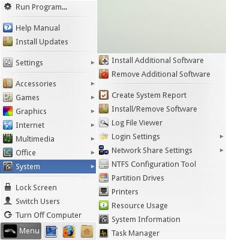
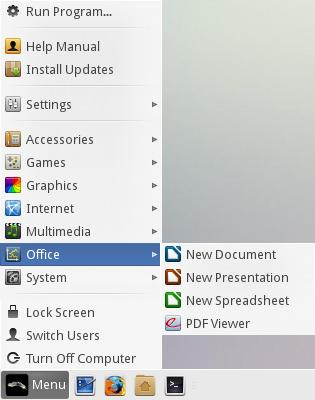
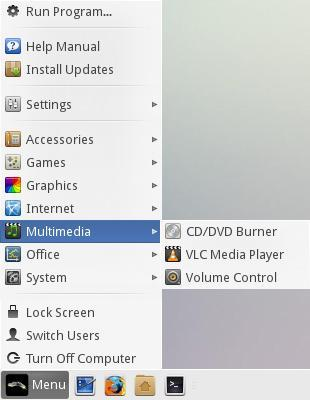
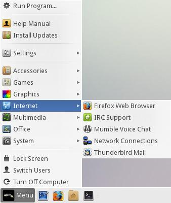
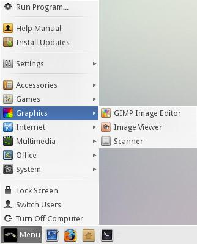
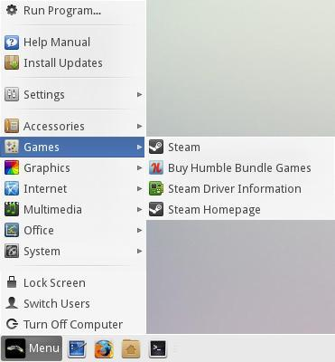
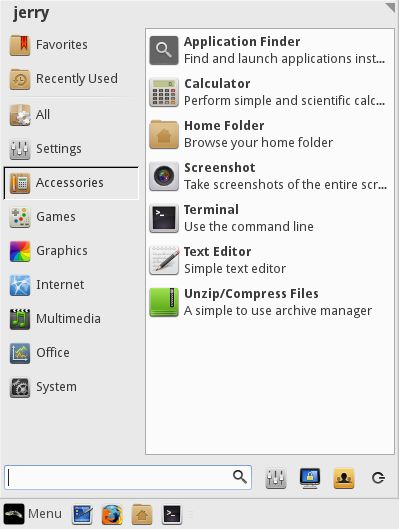

Welcome to Linux Lite - simple, fast, free.
|
Version: 2.0 | Date published: 26th June, 2014 |
|
|
Authors: Bill Hahnen, Adam
Grubbs, John Jenkins, Jerry Bezencon | New:
Added new Software
Tutorials page,
Encrypt Home folder and
Dual Monitor
tutorials. |
|
Operating System:
Current Release Name: Linux Lite 2.0
Architecture: 32bit and 64bit
Software Base: Ubuntu 14.04 LTS
Desktop Environment: XFCE 4.10
Media Type: CD, 2gb or larger USB device
Online Support: Click here
Keyboard Shortcuts:
Ctrl+Alt+T - opens a terminal.
Windows key+H - opens your home folder.
Windows key+L - locks the screen.
Alt+F2 - opens the Run Program dialogue box.
Printscreen key - opens the screenshot program.
Included Software: Help Manual, GParted, LibreOffice Writer,
LibreOffice Calc, LibreOffice Impress, Scanner, Bluetooth, XFBurn CD/DVD Burner, VLC Media Player,
Firefox Web Browser with Flash, OpenJDK Java,
Steam, Mumble Voice Chat, Thunderbird Email, Gimp
Image Editor, Leafpad Text Editor, Xarchiver, Lite User Manager.
Post-Installation: The first thing you should do after a new install is click on
Menu, Install Updates. Next if you have any wireless, wired,
graphics card devices or other hardware devices,
click on Menu, Settings, Install Drivers. Please read the information
provided very carefully before choosing a suitable driver. It is usually
best to choose the recommended driver. You can look through how to
connect to the internet by clicking here.
More information on drivers can be found
here.
Secure Boot:
Linux Lite recommends that you set your Bios to Legacy. If you already have Windows installed and you wish to dual boot with Linux Lite, we recommend you set your Bios to Legacy mode then reinstall Windows, and then Linux Lite. Linux Lite does not support or advocate the use of Secure Boot.
Keyboard Function
On some laptops you may have to enable Numlock as it is disabled by default. You could also try FN + Numlock to use your keys, or FN + one of the F keys across the top of your keyboard. This varies from computer to computer.
Create System Report
Linux Lite comes with the Create System Report tool found under Menu, System. This tool helps our Support team more accurately identify any problems you may be having, thus providing you with better service. Click here to learn more about this.
If you cannot find the answer to your question in this manual, please choose from the following:
Forums:
Click here to get support for Linux Lite on the Linux Lite Forums. Please search the Forums before posting your question, chances are the question you have, has previously been answered. When posting for support, make your title descriptive as possible. Within the post, specify details of the problem, describe the procedure you followed that led to it, steps you tried in order to resolve the issue, and any error messages you may have encountered at various stages in the process. Also include information on your computer - model number, approximate age, CPU, RAM, etc. (The Create System Report tool is good for that.) The more info you provide the easier it will be for people to evaluate the situation and offer appropriate guidance.
Mumble:
Mumble is already installed under Internet in the Menu. The Linux Distro Community Mumble connection details have already been entered for you. Simply highlight Linux Distro Community click on Connect and it will take you into the Linux Distro Community Mumble server.
To talk, hold down and press F6 on your keyboard and then release when you have finished talking. This is known as Push to Talk. You may need to check your volume levels first, click here for sound configuration details.

Support:
When you launch Menu, Internet, Support this will automatically connect you to the Linux Lite Forums.
Social Networks:
Facebook:
https://www.facebook.com/pages/Linuxlite/572323192787066
Twitter:
https://twitter.com/LinuxLite
Google+:
https://plus.google.com/+linuxliteos/
LinkedIn:
http://www.linkedin.com/in/jerrybezencon
General Software Support:
If you are using a program for example Firefox, the first port of call should always be the developer and or creator/s directly. Most programs have a Help menu somewhere on their program. The Help menu will then have a link to their support area. This is where the experts are and you should receive excellent support. If after trying this you are still getting nowhere, feel free to use one of our above services. Because Linux Lite is based on the popular Ubuntu Operating System, many questions can also be answered by simply entering the issue you are having into your favorite search engine.
The menu system on Linux Lite has been greatly simplified to make navigation straight forward and intuitive.
System:

Install Additional Software - Gives you the option to
install common applications like a video editor, an instant
messaging client etc. Installing software is easy, simply follow
the onscreen instructions and enter your password when asked.
Remove Additional Software - Removes software you
installed via Install Additional Software.
Create System Report - Creates a comprehensive hardware
and software report for your system.
Install/Remove Software - Install and Remove software with
Synaptic Package Manager.
Log File Viewer - View system your logs, helps with
troubleshooting.
Login Settings - Enable or disable automatic login for 1
user.
Network Share Settings - Here you can configure your
computer to connect to your Windows shares.
NTFS Configuration Tool - Allows you to access ntfs file
systems on external drives (enabled by default).
Partition Drives - View and edit your hard drive partitions
with GParted
program.
Printers - Install and set up printers.
Resource Usage - Shows you how much cpu and memory your
computer is using. Also displays system processes.
System Information - View hardware like your cpu, memory,
graphics card etc in detailed information.
Task Manager - An overview of currently running computer
processes. You can kill applications here to.
Office:

New Document -
Open LibreOffice Writer, an application similar to Microsoft
Word.
New Presentation -
Open LibreOffice Impress, an application similar to Microsoft
PowerPoint.
New Spreadsheet -
Open LibreOffice Calc, an application similar to Microsoft
Excel.
PDF Viewer - View PDF documents with this application.
Multimedia:

CD/DVD Burner -
A fully featured CD & DVD burning program - XFBurn.
VLC Media Player -
A fantastic all around media player, play mp3's, avi's, mkv's
etc. Plays all your media files.
Volume Control - Individually set volume levels for each
program that is running and configure your sound devices.
Internet:

Firefox Web Browser -
Browse the internet.
Support - Get Support
at the Linux Lite
Forums.
Mumble Voice Chat -
A voice chat program similar to TeamSpeak and Ventrilo.
Network Connections - Manage and connect to wired, wireless,
3g and VPN networks.
Thunderbird Mail -
Email program, send and receive email.
Graphics:

GIMP Image Editor -
A powerful, and fully featured image manipulation program with
features similar to Photoshop.
Image Viewer - Preview your pictures with this viewer.
Scanner - Scan your documents and pictures.
Games:

Steam - The Steam for Linux client, with games like Dota
2, Team Fortress 2 and Counterstrike.
Buy
Humble Bundle Games - A link to the Humble Bundle games
website, an online indie games store.
Steam
Driver Information - Essential information for driver
requirements to run Steam. Please read first.
Steam Homepage - A link to the Steam homepage.
Accessories:

Application Finder - A handy pop up menu to all
your programs, by category and in alphabetical order.
Calculator - A basic calculator also capable of
scientific functions.
Home Folder - Your home folder.
Screenshot - Take a screenshot of a window, and
selected area, or the entire desktop.
Terminal - Sometimes referred to as the 'shell' a terminal
is a place to input various system commands.
Text Editor - A basic text editor, a program to type text
into.
Can also be used to create and/or edit configuration files.
Unzip/Compress Files - Extract zip, tar.gz files etc
to a location on your computer, usually the Home folder.
Application Finder:

Clicking on this, you can run any program that is installed on the computer by its name.
Help Manual: A link to this Help manual.
Install Updates: Checks for updates for Linux Lite. Click here to learn more about installing software and updates.